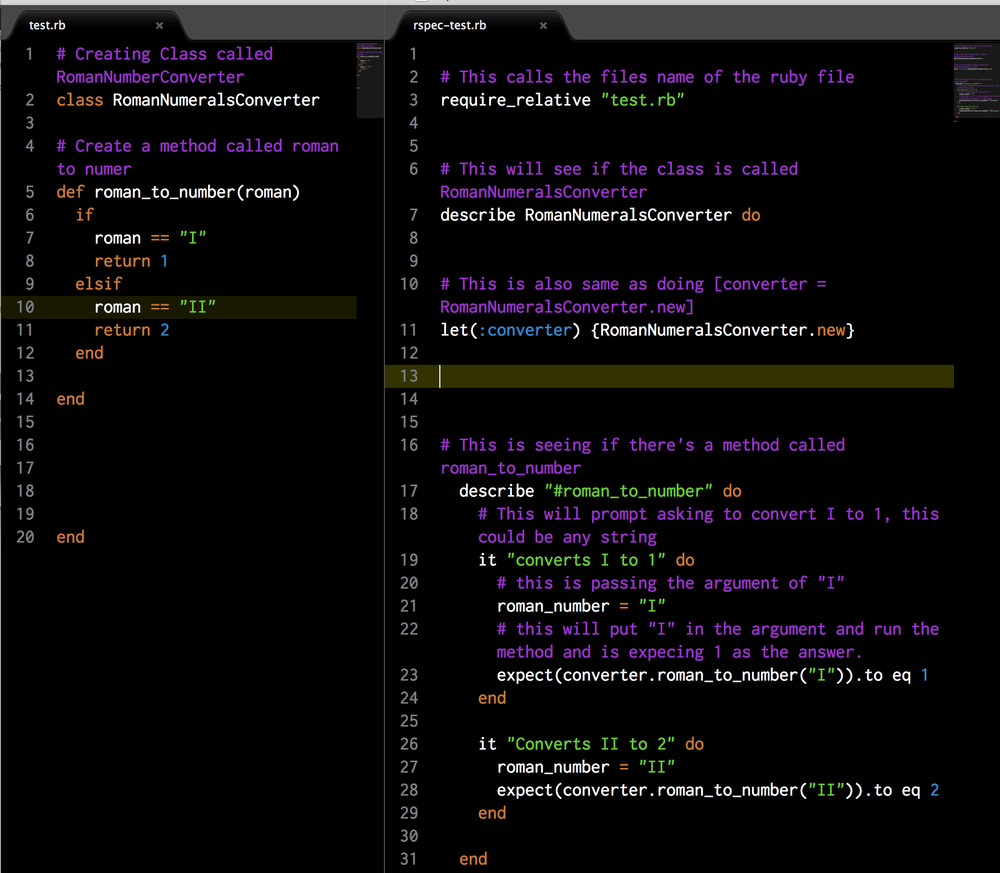

Why Create a rspec file
Most people don’t like making a Rspec file because it’s a complete waste of time. You’re making two code scripts for one file. Well you are true if you think that way. Making a Rspec file is a big time waster, that is if you are making a small code, you can check it line by line for a few time and it’s not big deal.
What if one day you are working on this huge program and something went wrong but you don’t know where it went wrong? Well creating a Rspec file should be part of you pseudo coding process. Because it comes in handy if you need to run and error check on your file. Most time your code aren’t going to be log on the console for you to see it if you’re just returning something. It also comes in very handy if you wanted to refactor your code and make sure it still returns the same values.
Walk-Through of creating one
On the bottom I have including an image file I have created to show you how I created the rspec file. On the left is my actual test.rb which is my actual ruby file. On the right I have created a file called rspec_test.rb. I'll go through the lines to explain What I have done. You might have already notice there's a few large gaps between some codes. I created these gaps to break the code up to see what they are doing and part of which group. Normally for a programmer you wouldn't want all these gaps in there.
Plase look on the image on the right window.
Line: 3 I have created a require_relative command. This will know which file to run the rspec on.
Line: 7 I have Created a command to look for a Class called "RomanNumeralsConverter".
Line: 11 I have create in new instance of the Class called "RomanNumeralsCoverter". That is also the same as using the command converter = RomanNumberalsConverter.new But if I used that code I would had to put it in every describe command that follows.
Line: 17 This command will look for a method named "roman_to_number", the end for this is on line: 29
Line: 19 This command is within the "roman_to_number" method. I used the command "it" to start the command and used the test "converts I to 1" to describe what this command will do.
Line: 21 I created a variable called "I" which I will use later to pass it in the argument.
Line: 23 This is when I pass the varible called "I" into the instance we named converter. The script coverter.roman_to_number("I") is equal to 1.
I also did it for 2, but at this point you get the basic idea of creating a rspec file of your own. Now that your code will pass rspec. You can start the refactig process after you know your code is running and returning the correct informaton. So I hope this helps you understand rspec on a basic level.
